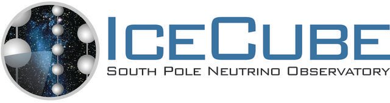

Boost Library Official Maintainer Program
Introduction
The Boost Community Maintenance Team (CMT) has identified many Boost libraries still used but not maintained actively. To protect the reputation that Boost has cultivated over the years, as an organization that provides high-quality open-source software, all libraries bundled with Boost releases have active and engaged maintainers. The purpose of the Boost Library Official Maintainer Program is to recruit companies and organizations, that are likely already providing internal support, to become official maintainers of those libraries already important to them.
In exchange for taking on maintenance of a library, Boost will display the maintainer's logo below in the Libraries and Participants section. Boost may also display the logo on the Boost github and Trac sites. Maintainers are also allowed to use the Boost Official Library Maintainer Logo on their own sites, presentations, etc...
{kind=link}
Applying to the Program
If you're interested in maintaining a Boost library :
- Read the Memorandum of Understanding, which outlines what's expected of mainainers as well as terms for leaving the program.
- Send an email to the program administrator (Alex Olivas) indicating which library (or libraries) you'd like to maintain.
Thanks for helping out!
Libraries and Participants
Boost.Function - Maintained by The IceCube Collaboration 
Program Administrator
The Boost Library Official Maintainer Program is currently administered by Alex Olivas. Feel free to send an email if you'd like more information about the program.